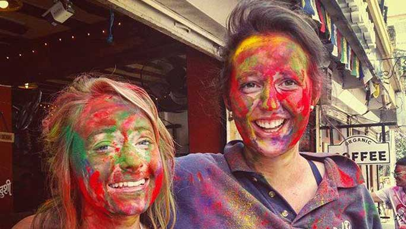
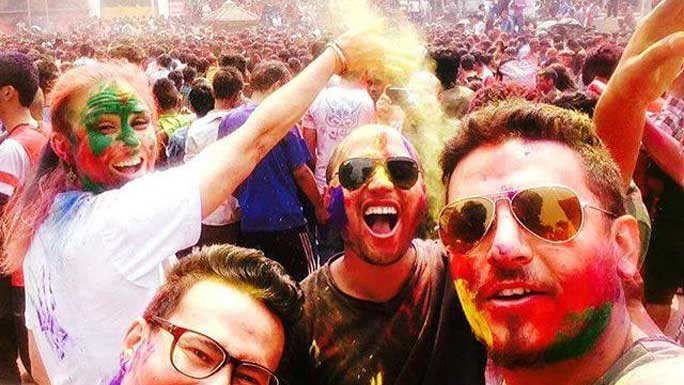
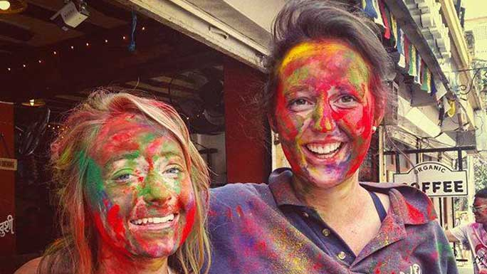
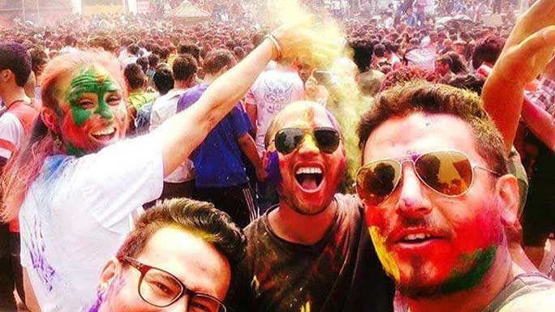

HOLI - FAGU PURNIMA
Colors, fun & water; friends, food & lots of laughter! Happy Holi!
Celebrate all the good things in life! Spring comes a calling. Fagu Purnima or Holi is a Hindu festival celebrated on a full-moon day at the end of the month of Falgun, from mid February to mid May.
Celebrated as the harbinger of good and balmy spring weather, Fagu Purnima is celebrated all over Nepal especially in the southern Terai region. Holi will be celebrated on March 1 in the hills, while in the Terai the festival will be celebrated a day later, on March 2. Legend has it that this festival originated as celebration of the death of the Demoness Holika.
 This wicked woman, who was supposed to be indestructible by fire had made several attempts to kill her nephew, Prahlad, a devout follower of Lord Vishnu. Eventually, she put the boy on her lap and set fire beneath them, thinking that he would succumb to the fire while she would escape. But instead the boy remained unharmed and Holika, to her surprise, was destroyed by the fire. In the Kathmandu Valley, Fagu Poornima begins on the first day with the raising of the Chir pole about noon in front of Kumari House in Basantapur. Holi is known for the revelry that takes place with people dousing each other with water and color.
 On the last day, the Chir pole is brought down, dragged to Tudikhel and burnt to cinders. The ashes are carried home by devotees as it is believed it will provide them protection against evil. In the Terai region, Holi is celebrated a day later than in Kathmandu Valley.
 This wicked woman, who was supposed to be indestructible by fire had made several attempts to kill her nephew, Prahlad, a devout follower of Lord Vishnu. Eventually, she put the boy on her lap and set fire beneath them, thinking that he would succumb to the fire while she would escape. But instead the boy remained unharmed and Holika, to her surprise, was destroyed by the fire. In the Kathmandu Valley, Fagu Poornima begins on the first day with the raising of the Chir pole about noon in front of Kumari House in Basantapur. Holi is known for the revelry that takes place with people dousing each other with water and color.
 On the last day, the Chir pole is brought down, dragged to Tudikhel and burnt to cinders. The ashes are carried home by devotees as it is believed it will provide them protection against evil. In the Terai region, Holi is celebrated a day later than in Kathmandu Valley.